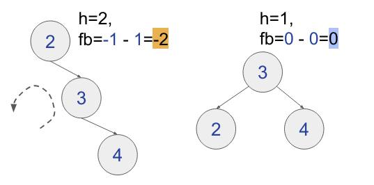
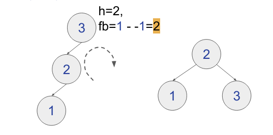
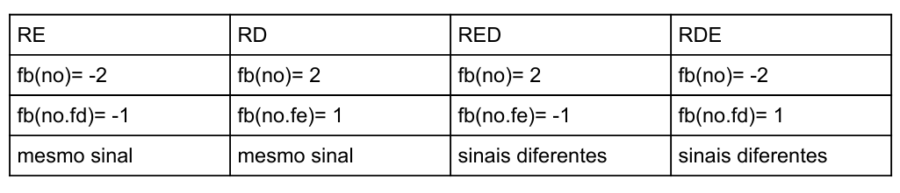

Disciplinas
-
ESTRUTURA DE DADOS-T01-2024-1 Concluído
Materiais
Vídeo 1 - [UFMS Digital] Estrutura de Dados - Módulo 3 - Unidade 1. sendProf° ministrante: Dr. Jonathan de Andrade Silva.
Conteúdo
Conceitos: árvore AVL e balanceamentos por rotação.
Árvores Binárias Balanceadas..
- Existem alguns tipos de árvore binárias que realizam esse processo de “balanceamento” para garantir a árvore binária quase-completa, por exemplo:
- Árvores AVL (1962);
- Árvores Rubro-Negras (1978);
- Árvores Splay (1985).
AVL (Adelson-Velsky e Landis).
- Criada em 1962 por Georgy Adelson-Velsky e Evgenii Landis, a AVL é a mais antiga estrutura de dados para permitir o balanceamento das árvores binárias;
- Possui estratégias de balanceamento para permitir equilibrar as alturas das sub-árvores esquerda e direita de qualquer nó;
- O balanceamento é realizado sempre após as operações de inserção e remoção da árvore. AVL (Adelson-Velsky e Landis)
- A estratégia de balanceamento envolve operações de rotação em qualquer nó da árvore;
- A ideia é rotacionar a árvore para esquerda ou direita para distribuir os nós de uma subárvore para outra.
- Na AVL uma árvore é dita balanceada quando:
- A diferença de altura das subárvores esquerda e direita de um nó é de no máximo 1 unidade (±1).
AVL - Balanceamento.
- A altura de um nó é o número de arestas no maior caminho até um nó folha;
- O fator de balanceamento (fb) é a diferença entre as alturas das subárvores esquerda e direita de um nó:
- fb(no) = altura(no.fe) - altura(no.fd)
AVL - Exemplos.
- Calcular o fator de balanceamento dos nós e verificar se é AVL, (fb no máximo em 1 unidade).
AVL - Balanceamento.
- Para realizar o balanceamento em um nó com fb com 2 unidades, temos 2 tipos de operação de rotação:
- Rotação Simples: rotacionar para esquerda (RE) ou direita (RD) os nós da árvore.
- Rotação Dupla: realizar duas rotações consecutivas e alternadas, rotação simples à esquerda seguida da direita (RED) ou direita seguida da esquerda (RDE).
Rotação Simples.
Rotação Simples à Esquerda (RE):  Rotação Simples à Direita (RD): - Algoritmo RE(raiz):
- no = raiz
- raiz = raiz.fd
- no.fd = raiz.fe
- raiz.fe = no
- retorna raiz
- Algoritmo RD(raiz):
- no = raiz
- raiz = raiz.fe
- no.fe = raiz.fd
- raiz.fd = no
- retorna raiz
- Rotação Dupla à Esquerda: Direita-Esquerda (RDE):
- Rotação Dupla à Direita: Esquerda-Direita (RED):
- Algoritmo RDE(raiz):
- raiz.fd = RD(raiz.fd)
- raiz = RE(raiz)
- Algoritmo RED(raiz):
- raiz.fe = RE(raiz.fe)
- raiz = RD(raiz)
AVL - Inserção e Remoção.
- O procedimento de inserção/remoção é realizado como na árvore binária.
- Porém, atualiza-se o fator de balanceamento (fb) dos nós.
- Caso o fb exceda em uma unidade (fb ±1) aplicar as rotações adequadas para o devido balanceamento da árvore.
AVL - Componentes do Nó.
- Podemos então definir que o nó seja descrito por:
- chave: valor a ser inserido;
- fb: fator de balanceamento;
- h: altura do nó;
- fe: filho esquerdo;
- fd: filho direito.
AVL - Inserção.
- Vamos considerar a inserção de 2 nós na árvore abaixo.
- Precisamos descobrir como saber qual situação aplicar as rotações;
- Temos que observar o fb dos nós.
Precisamos descobrir como saber qual situação aplicar as rotações:
- Etapas:
- Inserir o nó como na árvore binária;
- Atualizar o fb dos nós do caminho da inserção;
- Verificar quando houve desbalanceamento;
- Aplicar o procedimento de rotação adequado.
- Exemplo no VISUALGO.
- Testar com os casos de rotação simples e duplo.
- Na próxima aula vamos trabalhar nos detalhes do algoritmo de inserção e remoção.
Referências
- CORMEN, Thomas. Algoritmos: teoria e prática. Rio de Janeiro: GEN LTC, 2013. ISBN 9788595158092. Disponível na Biblioteca Digital da UFMS.
- SZWARCFITER, Jayme Luiz; MARKENZON, Lilian. Estruturas de dados e seus algoritmos. 3. ed. Rio de Janeiro, RJ: LTC, 2010. ISBN 9788521629955. Disponível na Biblioteca Digital da UFMS.